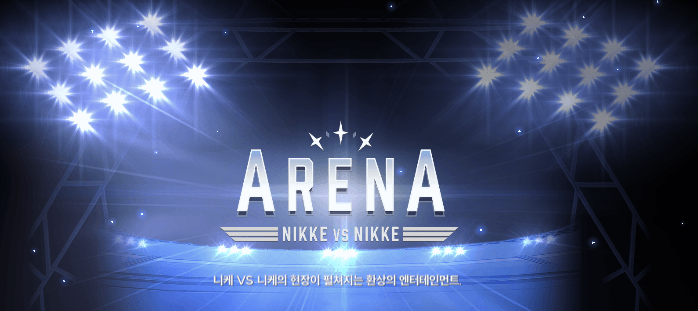
3.5 유입을 위한 아레나 컨텐츠의 기본 설명
니케의 유일한 PVP 컨텐츠이며
서로 5명의 니케끼리 전투를 벌이는 것을 골자로 한다
니케끼리의 전투는 랩처와의 전투와 매커니즘이 조금 다르기 때문에 별도의 공략으로 다룬다
아레나 전용 캐릭터의 육성이 필요해지기 때문에
각각의 아레나의 진행 방식과 보상 정보에 따라
자신이 아레나를 할 것인지 아닌지 스스로의 판단에 맞춰 육성을 진행하자
전투력 패널티
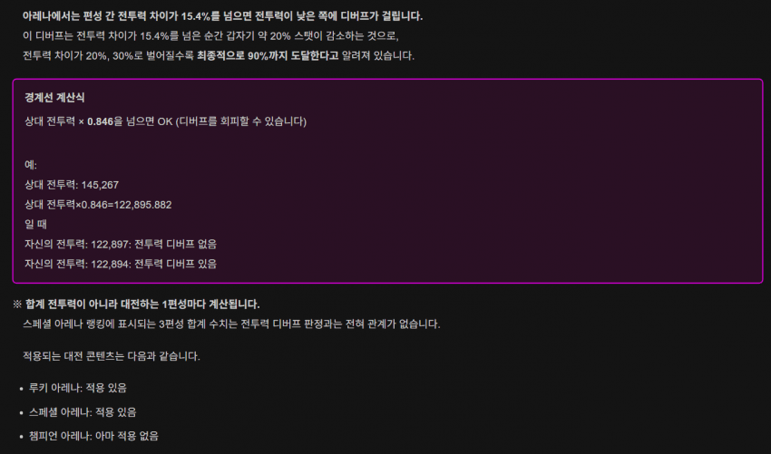
챔피언 아레나를 제외한 모든 아레나에서는
스테이지와 똑같이 전투 능력이 스쿼드의 전투력에 비례한다
약 15.4% 기준으로 전투 능력이 급격히 떨어지기 때문에
항상 이 투력 패널티를 주의해야 한다
또한, 이 전투력을 결정하는데 가장 영향이 큰 것이
"싱크로 레벨" 이기 때문에
높은 싱크로 레벨은 높은 순위를 보장한다
아레나의 종류
루키 아레나 / 스페셜 아레나 / 챔피언 아레나
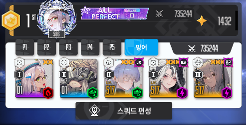
오직 1개의 덱 (5명) 으로 전투한다
각자 설정해놓은 방어 덱을 공격자가 공격하는 방식으로 이루어진다
하루 무료 공격 횟수는 5회, 이후부터는 100 쥬얼씩 든다
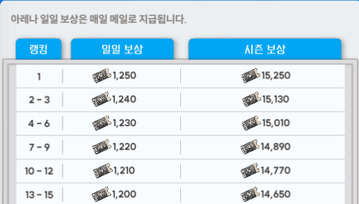
가장 루키한 아레나이기 때문에 보상은 아레나 티켓만 준다
그러므로 루키 아레나를 위해 육성을 한다 << 라는 개념은 없다
하지만 스페셜 아레나 육성시 루키 아레나도 같이 가기 때문에
어디까지나 덤 취급이다
루키 아레나에서 2개 늘어난 총 3개의 스쿼드로 전투한다
3전 2승을 획득한 쪽이 최종적으로 승리하는 방식
하루 무료 공격횟수는 2번, 이후부터는 100쥬얼씩 든다
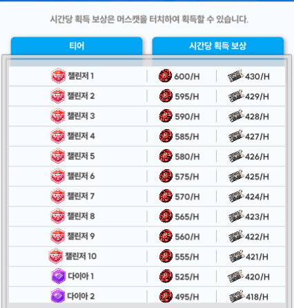
점수는 티어를 유지한 시간 x 티어별 획득 칩 개수로
시즌 종료시 칩의 획득량을 기준으로 랭킹을 계산한다
즉, 시즌 종료 직전에 티어를 달성해봐야 통산 칩 개수로 계산되기 때문에
평상시에 랭킹을 장시간 유지하는 것이 중요하다
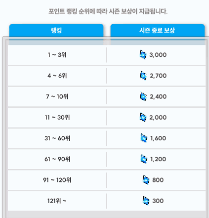
시즌 종료시 보상으로 쥬얼을 준다
그러므로 스레나에서부터는 WWE인 루키 아레나와 다르게 UFC가 벌어진다
만약 당신이 매 시즌 쥬얼 보상을 챙기고 싶다면
최소한의 투자로 스페셜 아레나에 입상하는 것이
아레나를 즐기는 가장 효율적인 방법이 되겠다
전투력이 적용되는 구간이기 때문에
싱크로 레벨이 성적의 주요 척도가 되는데
조금의 전투력 차이는 아레나 전용 편성을 사용하는 등의
실력과 시간으로 어느정도 극복이 가능하다
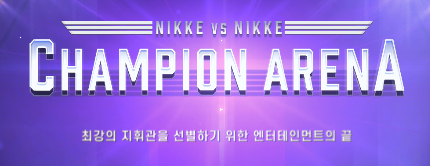
스페셜 아레나의 시즌 랭킹이 1-4위를 유지한 사람들이 초대되는 아레나
인접 서버의 스페셜 아레나 상위권을 그룹으로 묶어
총 256명이 토너먼트 형식으로 전투한다
한 사람당 총 5개의 스쿼드가 출전한다 (25명)
현시점에서 "전투력 패널티"는 적용되지 않는다고 알려져있다
오로지 덱의 조합 상성과 개별 성장치(장비 강화, 오버로드 옵션) 등으로 승패가 갈린다
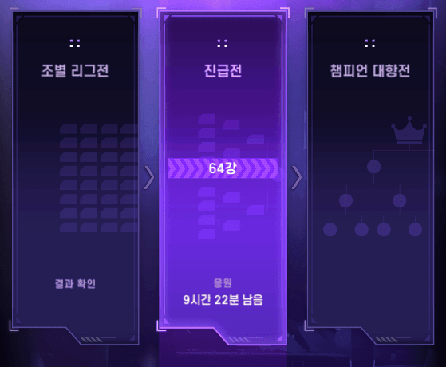
조별 리그전 - 진급전 - 챔피언 대항전으로 구성되어 있는데
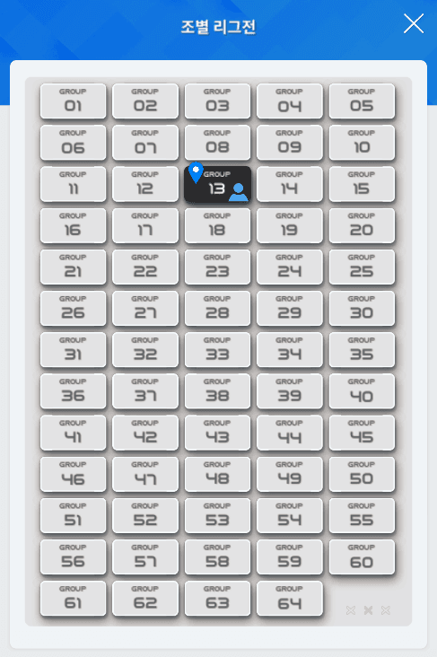
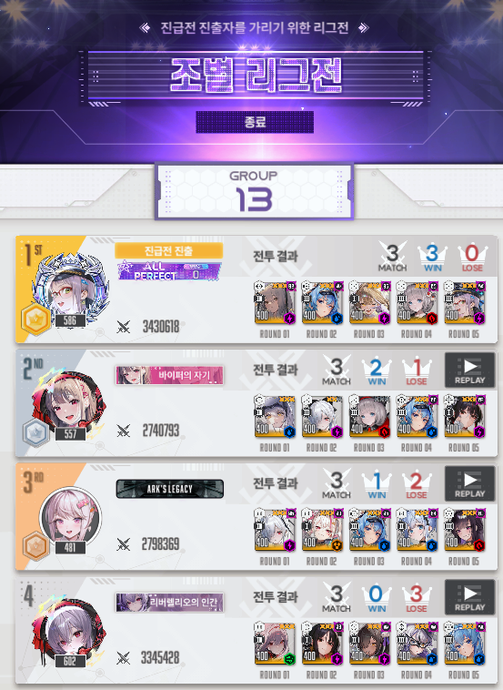
총 256명을 4명씩 한 조로 묶어서
하루만에 전투를 진행하는 것이 조별 리그전이다
서로 5덱 vs 5덱으로 5번의 전투를 실시하여 5전 3승을 취득한 쪽의 승리로 계산된다
각각 전투 결과에 따라 쌓인 승수를 계산해서
오직 1등만이 다음 진급전으로 진출한다
만약 2승 1패 동률인 경우, 개별 전투의 승점으로 계산한다
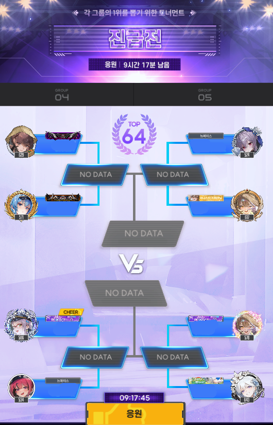
진급전 / 챔피언 대항전 부터는
살아남은 64명이 각각 1:1의 토너먼트 형식으로 치루어진다
똑같은 5전 3승제이다
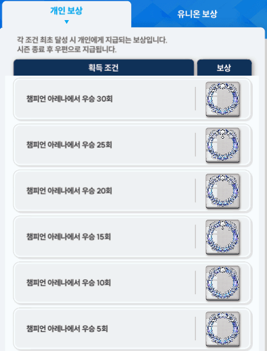
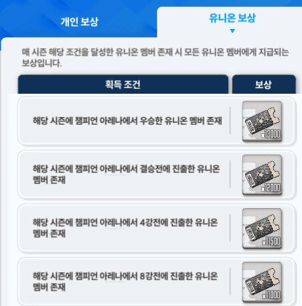
챔피언 아레나는 참가자의 성적에 따라 테두리 보상과
유니온 전체에 아레나 티켓을 보상한다
하지만 보상 자체는 자기 만족의 영역이며
전투력이 적용되지 않는 구간이기 때문에 무엇보다 캐릭터 육성이 중요해진다
아레나 전용 캐릭터에 대한 투자를 늘릴 수록, 레이드 컨텐츠와 거리가 멀어지기 때문에
심사숙고하여 자신의 진로를 결정하자
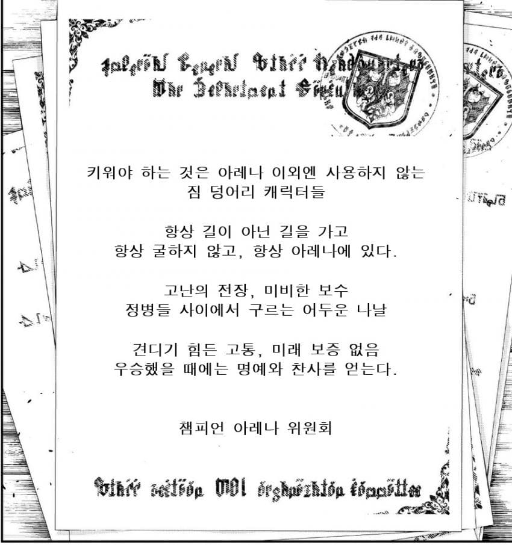
전투 시스템
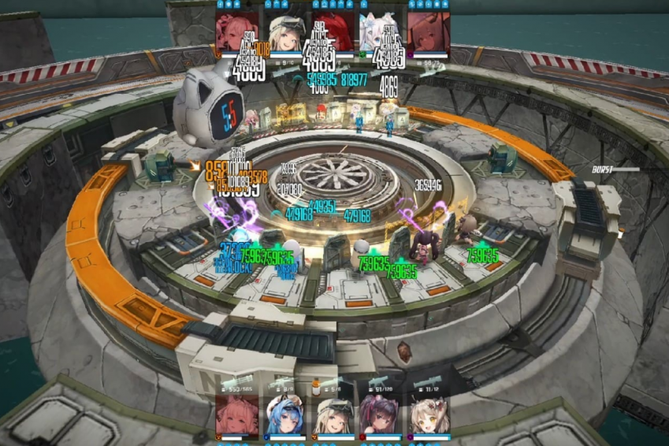
기본적으로 5:5로 진행되며
스테이지와 동일하게 엄폐물을 가지고 있다
단, 전투가 시작되면 유저는 어떠한 조작도 불가능하며 자동 전투 방식으로 진행된다
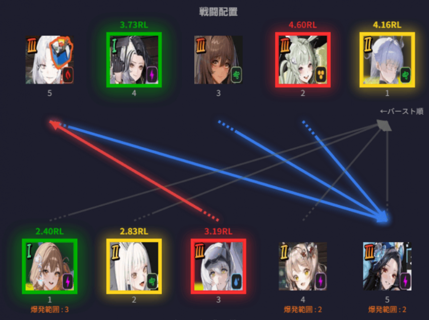
전투 시작시 편성 순서 기준으로 배치되며 상대는 반전된다
공격측이 아래에 위치하고 방어측이 위에 위치한다
통상적으로는 위 사진의 회색 선과 같이 1번 니케부터 점사한다
단, 무기군에 따라 공격 순서가 바뀌는데
공격측 (하단측, 빨간색 선) SR 스나이퍼 라이플은 1번이 아닌 5번을 우선적으로 공격하며
방어측 (상단측, 파란색 선) SG 샷건도 1번이 아닌 5번을 우선적으로 공격한다
RL 런쳐는 주변 대상에게 까지 스플래쉬 데미지를 가하며
SG 샷건은 명중률 보정을 받아, 10개의 팰릿이 전부 명중하는 효과를 가진다
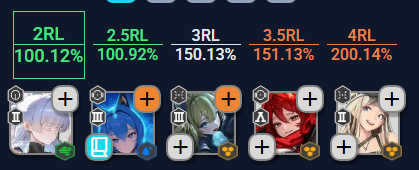
자주보게 되는 "RL" 이란 표현은 런쳐의 미사일 착탄 시간을 뜻하는 아레나 용어이다
버스트 게이지 충전량을 %로 표시하며 100%를 발동 가능으로 표현한다
즉, 2RL은 통상적인 런쳐의 미사일이 2번 착탄하는 시점 (전투 시작 후, 2.533초)
2RL 100%는 "런쳐의 미사일이 2번 착탄하면 버스트 발동이 가능하다" 라는 의미다
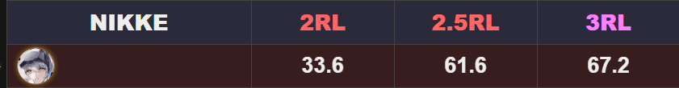
예를들어 스노우 화이트 헤비암즈의 버스트 충전량은 위 사진과 같다
2RL (전투개시 2.533초) 시점에서 각설이는 33.6%의 버스트 충전을 제공하고
3RL (전투개시 3.8초) 시점에는 67.2%의 버스트 충전량을 제공한다
당신이 2RL 타이밍에 버스트를 사용하고 싶다면
해당 수치의 합계가 100%가 나오는 니케 5명을 편성하면 된다는 뜻이다
버스트 충전표 (2026/05/24 현재 기준)
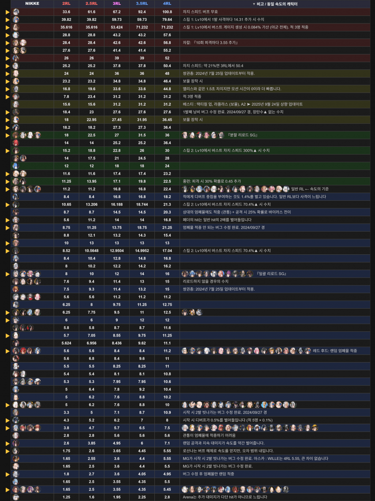
이외의 상세 정보는 이 글에서 다루지 않겠다
- 무기군에 따른 공격 순서
- 버스트 게이지 충전과 RL을 기준으로 한 표시
는 알고있어야 이후에 아레나 공략을 이해할 수 있는 최소한의 정보라고 생각하기 때문
그외에 자세한 사양은 이하의 링크에 잘 정리되어 있으니 읽어보자
https://nikke-synergy.com/arena-guide_ko